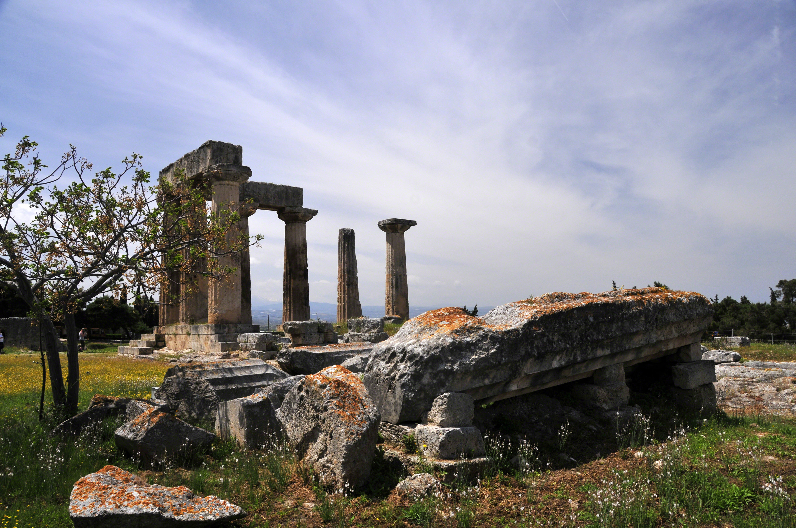
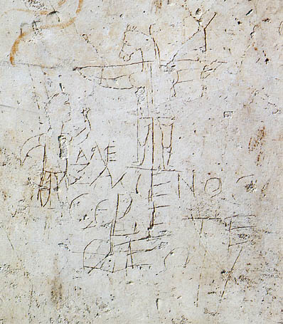

Un maestro galileo ejecutado debería haber caído en el olvido, como tantos otros. En cambio, tres décadas después su movimiento se extendía por el Imperio. ¿Cómo un crucificado se convirtió en el Cristo?
Cerramos la serie con la pregunta más consecuente de todas. La crucifixión debería haber sido el final: los movimientos en torno a un líder mesiánico normalmente se disolvían cuando Roma ejecutaba al líder. Con Jesús ocurrió lo contrario. En pocas décadas, sus seguidores no solo sobrevivieron, sino que proclamaron a aquel crucificado como Señor y Cristo, y llevaron su mensaje por todo el Mediterráneo. Este episodio traza —históricamente— esa transformación, y con ella enlaza con el final de "Grecia y Roma".
El motor histórico de todo lo que sigue fue una convicción: los discípulos creyeron que Jesús se les había aparecido vivo tras su muerte. El historiador puede constatar el hecho de esa creencia —su fuerza, su datación temprana, sus efectos— aunque la naturaleza de lo que experimentaron pertenezca al terreno de la fe, fuera del método histórico.
Lo constatable es esto: un grupo derrotado y disperso por la ejecución de su maestro se transformó, en poco tiempo, en una comunidad convencida, audaz y dispuesta a morir por proclamar que Jesús vivía. Ese cambio radical necesita una causa, y las fuentes la sitúan en las apariciones pascuales. Sea cual sea su interpretación, la convicción fue real y tuvo consecuencias históricas enormes: sin ella, no habría cristianismo.
La figura decisiva para convertir un movimiento judío en una religión universal fue Pablo de Tarso. Judío de la diáspora, de lengua griega y ciudadano romano, al principio persiguió a los seguidores de Jesús; luego, tras una experiencia transformadora, se volvió su más incansable propagador. Sus cartas (años 50) son, recordemos, los textos cristianos más antiguos que conservamos.
El aporte de Pablo fue revolucionario: llevó el mensaje a los gentiles (los no judíos) y, sobre todo, resolvió que no era necesario hacerse judío —circuncidarse, cumplir la Ley— para seguir a Cristo. Esa decisión, muy discutida en su momento, abrió las puertas del movimiento a todo el mundo grecorromano. Aquí conectan las piezas de la serie anterior: la lengua griega (la Septuaginta), las calzadas romanas, las ciudades cosmopolitas del Imperio. Pablo viajó por ellas fundando comunidades.

El proceso por el que Jesús, el predicador del reino de Dios, se convirtió en Cristo, el objeto de la fe, fue gradual. Fíjate en el desplazamiento: Jesús predicó sobre Dios y su reino; sus seguidores empezaron a predicar sobre Jesús mismo. El anunciador se volvió el anunciado. Los títulos crecieron con el tiempo: de maestro y profeta, a mesías (Cristo), a Señor, hasta las afirmaciones plenas sobre su divinidad que cristalizarían en los concilios de los siglos siguientes.
Este desarrollo es rastreable en las propias fuentes por orden cronológico: las cartas de Pablo, luego Marcos, y finalmente Juan (el más tardío) con la cristología más elevada. Para el historiador, es la huella de una comunidad reflexionando y elaborando el significado de Jesús a lo largo de décadas. Para el creyente, es el desvelamiento progresivo de una verdad. Los dos planos, una vez más, conviven sin que la historia arbitre entre ellos.

Y aquí la serie se enlaza con el final de "Grecia y Roma". Recordarás la bifurcación del año 70: tras la destrucción del Templo, del judaísmo del Segundo Templo brotaron dos ramas, el judaísmo rabínico y el cristianismo. Esta serie ha contado, por dentro, cómo nació esa segunda rama: de un profeta apocalíptico galileo, pasando por la convicción pascual de sus discípulos y la genialidad expansiva de Pablo, hasta convertirse en una fe autónoma que, para el siglo II, ya se distinguía claramente del judaísmo del que había surgido.
El Jesús histórico —el judío de Galilea— y el Cristo de la fe no son lo mismo, pero están unidos por un hilo histórico rastreable. Ver ese hilo no disuelve el misterio para quien cree, ni lo impone a quien no: solo muestra, capa sobre capa, cómo un hombre de una aldea sin importancia acabó cambiando la historia del mundo.
Un predicador galileo del reino de Dios se convirtió, tras la cruz, en el Cristo adorado por medio mundo.
La historia puede rastrear el hilo —de Nazaret a Pablo, del reino de Dios a la cristología— sin arbitrar el misterio. Lo que la fe ve como revelación, la historia lo ve como una de las mayores transformaciones jamás ocurridas.
El hecho histórico constatable es que los discípulos creyeron haber visto a Jesús resucitado, y que esa convicción —temprana y firme— transformó al grupo y originó el movimiento. La naturaleza de esa experiencia queda fuera del método histórico. El papel central de Pablo y sus cartas (años 50) en la apertura a los gentiles es consenso.
El desarrollo cristológico a lo largo del s. I es ampliamente aceptado, con debate sobre su velocidad ("cristología temprana alta" de Hurtado/Bauckham frente a modelos más graduales). El grafito de Alexámenos es un testimonio pagano real del s. II-III. La separación definitiva entre judaísmo y cristianismo fue un proceso de varias generaciones.
Esta serie ha descrito el Jesús histórico y los orígenes del cristianismo con el método histórico-crítico, respetando plenamente la fe cristiana. La distinción entre "el Jesús de la historia" y "el Cristo de la fe" es un marco académico estándar, no un juicio sobre la verdad de las creencias, que este blog no arbitra. Con esta serie, Estratos cierra su recorrido de El a Cristo.